- PROJECT MANAGEMENT
- DEVELOPMENT
- PHP
- MYSQL
- MICROINTERACTIONS
This project focused on improving the ordering experience for KC's Fresh Fruit and Smoothies, a popular food truck serving students around Drexel University. Despite its strong reputation, the stand operated on a cash-only, in-person system that often led to long wait times during peak hours. Over the course of three months, our team, 4 Corners, designed and developed a mobile app that allows students to order ahead through a simple, intuitive interface, reducing time spent waiting while maintaining the quick, casual nature of the food truck experience.
My Roles
I served as the primary project manager and secondary developer throughout the project.
As project manager, I was responsible for tracking task completion, organizing meetings, and ensuring we stayed on track across the three-month timeline. I kept the project aligned with our core goal of simplifying the ordering experience.
As a secondary developer, I contributed to building the app, supporting implementation decisions, and helping translate our design ideas into a functional product.
Context & Challenge
KC's Fresh Fruit and Smoothies operates in a fast-paced campus environment where high demand and a cash-only, in-person system create friction for both customers and the vendor, especially during peak hours. 4 Corners took on this challenge as we worked over three months to go from design to development of a fully functioning app that users can order from. Our goal was to design a solution that streamlined the process through quick, intuitive ordering and clear pickup identification. Success is measured by the app's reliability during testing, ensuring users could place orders without errors, move through the process without confusion, and experience accurate calculations during checkout.
Process & Insights
Making The Team Website & Landing Page
Before beginning any project, a solid foundation of who we are, design styles, and aligned goals are needed. I took in consideration of each members' feedback of what they want and created this colored coded animation of our roles, and the development of the site.
The challenge in this was making sure everyone's schedule aligned for meetings to continue iterations and discussions of final site before the deadline.
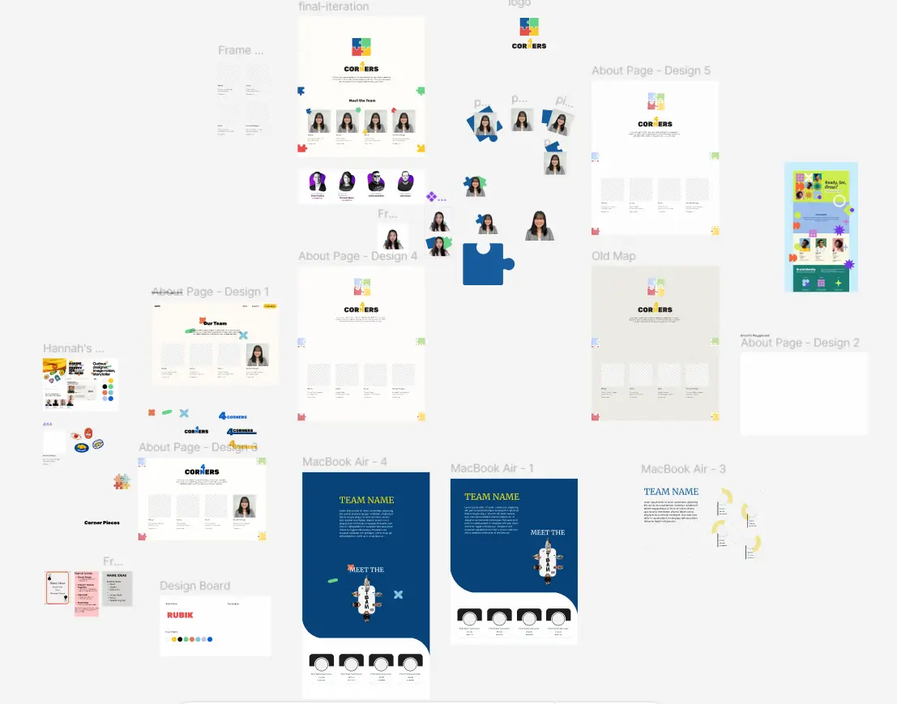

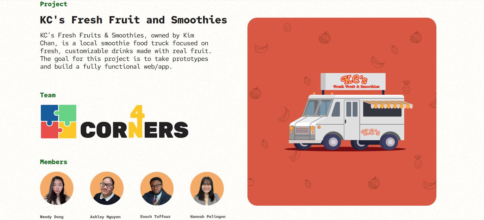
Defining Microinteractions
After designers created their initial prototype, I defined and coded all microinteractions within the critical path screens (ordering food and checking out). I used CodePen for easy integration into html when needed and kept the coding structure throughout so that little modification is needed in between, and making sure that everything is labeled well for flexbility and understanding when others may need it.
Biggest challenge in this was making sure the JavaScript worked well during each testing before moving on to the next part and learning how to integrate external fonts and icons into CodePen.
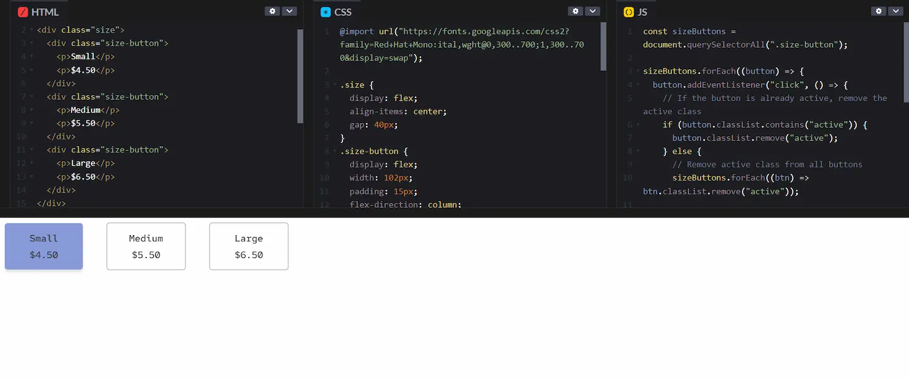
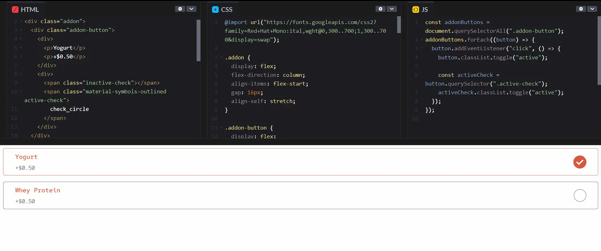
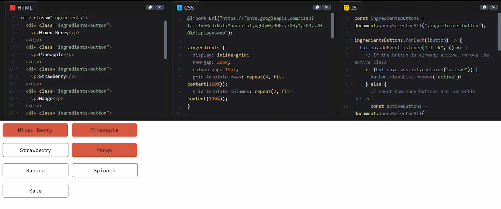
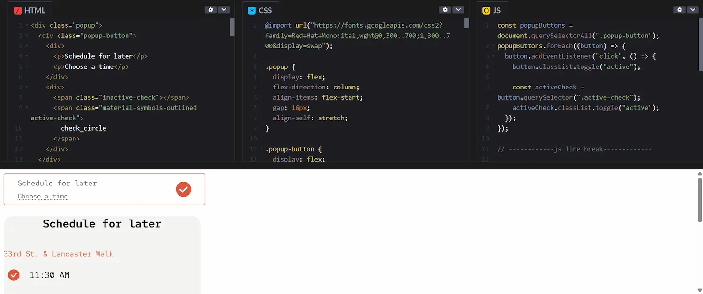
Main Menu Records
As the secondary developer, I assisted the primary developer with creating the backend of the app, which is the php database table that has all the records of the main menu. The goal was that it can select all check boxes, reset, and calculate any price made.
The challenge in this was understanding the code the primary developer made after handoff and making sure that my code didn't clash with theirs, while also making sure that my code was formatted in a way that the other developer can code the calculations with ease.
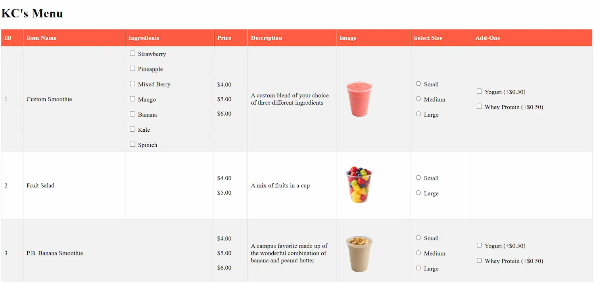
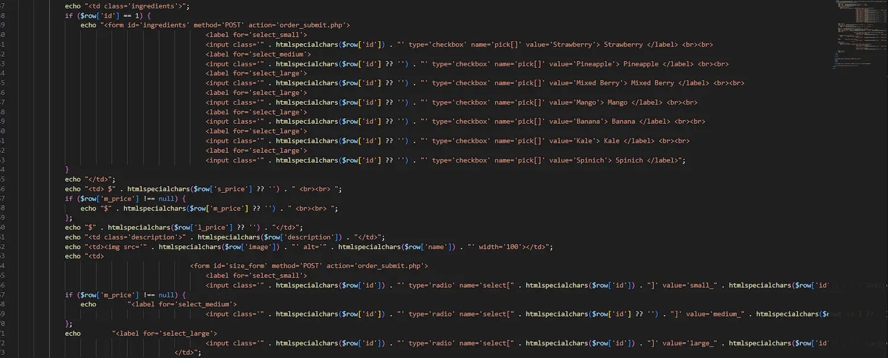
Integrating Frontend & Backend
I worked on integrating the php from the database table into html of the home screen and the product details screen. Since the prototype only had the layout for the custom smoothie screen, I added in loops and IDs that will input the correct data based on the product the user selects.
I also double checked to make sure what I did matched the frontend site. One thing I came across was that the designers added product labelings that was not in the database, so I created id statements that will input it. I tested other screens to make sure there's no errors or CSS/design issues as well.
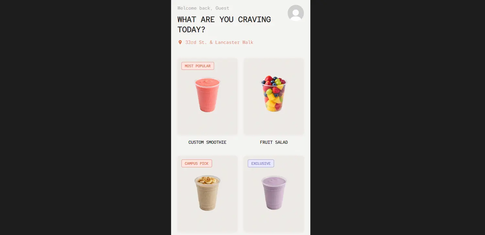
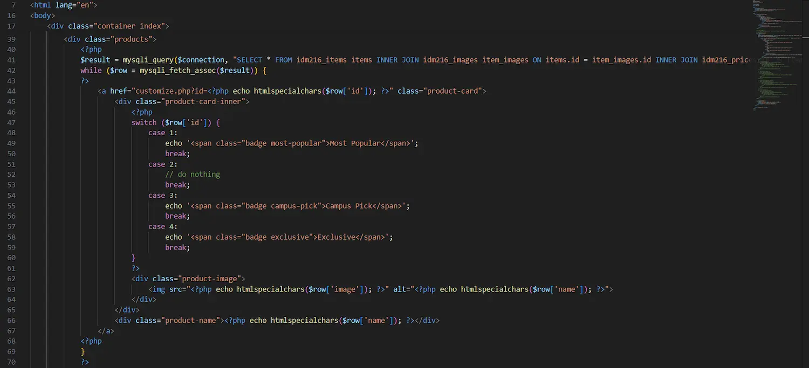
The same technique was applied to the cropped version of the product images the designers later implemented.
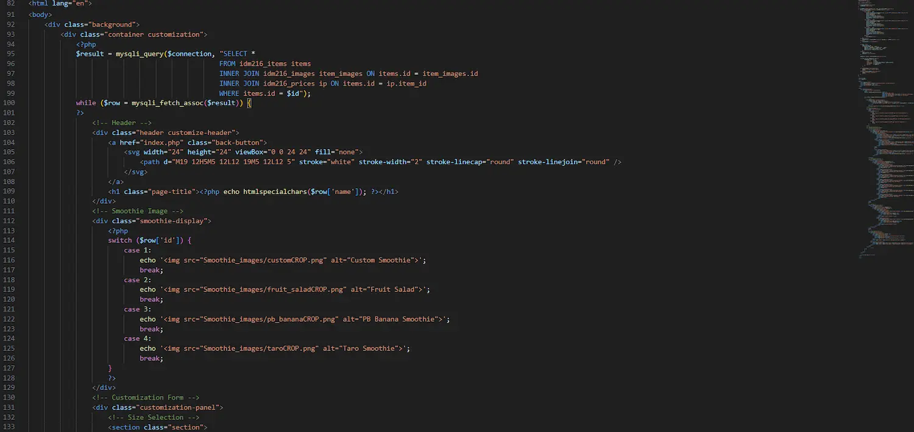
I added if statements to support varying product layouts and because not all products have the same amount of options.
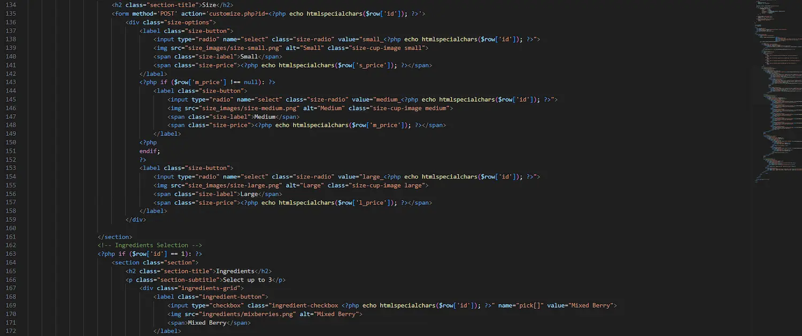
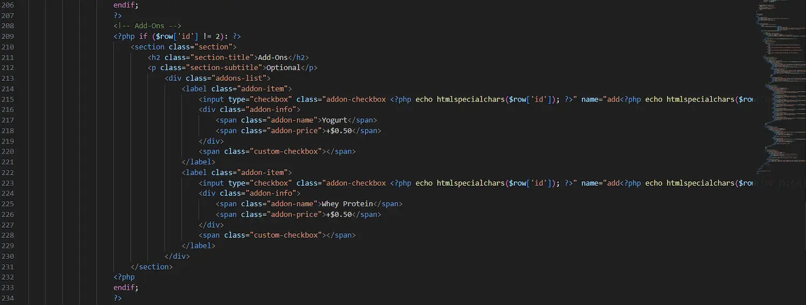
The challenge in integration was making sure everything aligned with the design and to have constant communication and making sure everything is up to date between members. I also learned how to utilize if statements and IDs in different ways.
The Solution
I communicated well with my team. When images were not found, I talked to the data architects for them. When the product labels might need change or when the order number was too small, I had discussions with the designers to make design decisions . As a co-developer, I had on going communication with the other developer to ensure nothing clashed and that all bugs were fixed with continuing testing in the final phase of this project.
The Results
In 3 months, my team, 4 Corners, conducted thorough user testing and interviews to ensure that users had a smooth navigation and experience using the app. Then, we created the frontend and backend code. In the end, we were able to create a fully functional app that allowed users to order food, make customizations, delete items, and make a purchase.